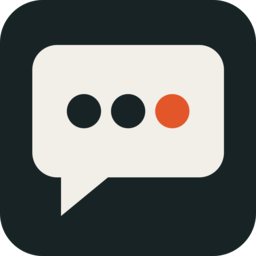
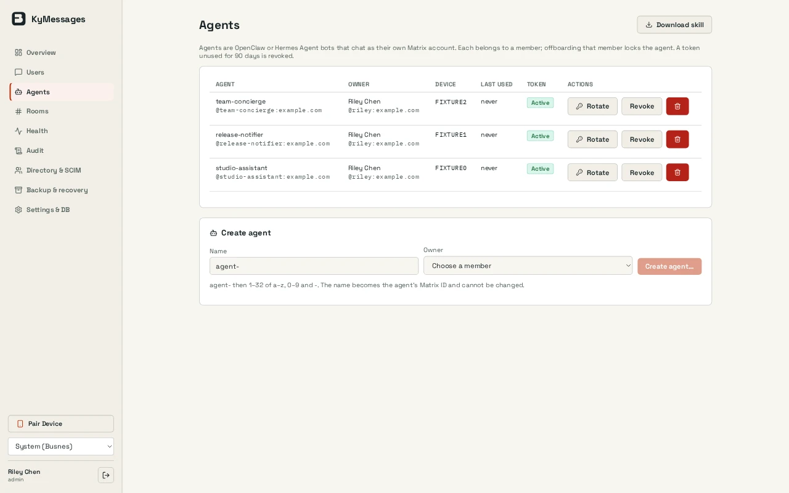

Encrypted rooms by default
The configured Element path encrypts new rooms by default. Other clients can still send plaintext; verify devices and keep the user’s Matrix recovery keys. Server backups do not replace those keys.

KyMessages / Team chat
A Matrix chat stack and operator console for your team, with KyIdentity sign-in, encrypted rooms and optional voice and video calls.
Open source (MIT) · Pre-releaseScreenshots
Example screens from local builds with fictional data. Appearance varies by version.

Inside KyMessages
The configured Element path encrypts new rooms by default. Other clients can still send plaintext; verify devices and keep the user’s Matrix recovery keys. Server backups do not replace those keys.
Only people assigned to the app in KyIdentity can use member chat when the identity and directory integrations are configured. A local operator account manages the service separately. Test deactivation across console, Matrix and call access; their revocation paths differ.
Element Call and LiveKit provide calls after the optional media stack is configured. KyMessages checks identity and room membership. Text-encryption tests do not establish microphone, camera or real-network call quality.
Operators manage users, rooms, health, audit and branding without seeing message content. Risky changes require a recent sign-in.
Closed by default. Operators can approve specific servers or pick from a short vetted list, and both sides must agree. Open federation is not offered.
Synapse, Matrix Authentication Service, Element, LiveKit and PostgreSQL, run unmodified and pinned. Ky supplies the sign-in, offboarding, operator console and sealed backups that tie them together.
How it fits together
The server always sees metadata such as room names, members, timestamps and devices, and it cannot stop a client from posting unencrypted messages. Servers you federate with keep copies of what was sent. Backups go to KyRecovery as sealed capsules with an encrypted media mirror.
Read the Busnes.app privacy policy. For data on an independently operated installation, contact its operator.
Next step
The README covers building, Matrix setup, sign-in, calls, federation and recovery.